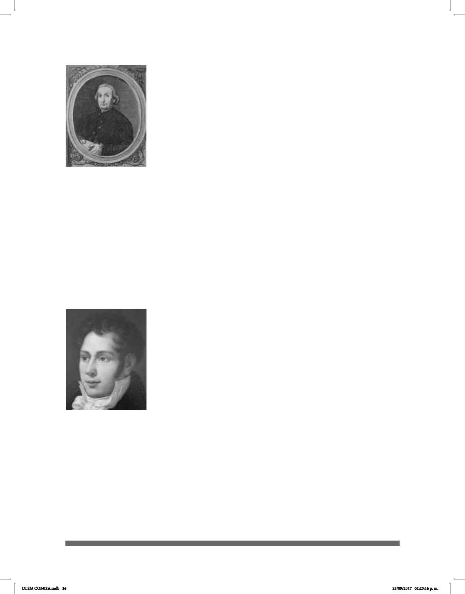

36
Lorenzo Hervás y Panduro (1735-1809), abate, lingüista y
lólogo español, realizó una aportación esencial a la historiografía
lingüística ilustrada. Después de vivir en Cesena entre 1773 y
1774 alrededor de diez años, decidió mudarse a Roma donde
tuvo la oportunidad de convivir con los miembros de la primera
escuela para sordos de la comunidad.
En 1795 publica, en dos volúmenes, Escuela española de
Sordomudos, ó arte para enseñarles a escribir y hablar el
idioma español, obra en la cual proporciona herramientas
que ayuden a los maestros de sordos a enseñarles a estos el
español. Hervás y Panduro se da cuenta que al momento de
enseñar la lengua española a los sordos, estos entienden con
facilidad y naturalidad ciertos conceptos gramaticales, pero
otros no. Esta situación lleva al abate a considerar que todos los seres humanos tienen
una “gramática mental” que contiene partes gramaticales que son comunes en todas las
lenguas. Por ello no resulta complicado aprender ciertas nociones gramaticales, por
ejemplo: la división temporal entre pasado, presente y futuro, así como la diferencia
entre los modos verbales: indicativo, imperativo y subjuntivo.
El vínculo que Hervás y Panduro estableció con la comunidad sorda le ayudó a
considerar ciertas ideas relacionadas con el desarrollo de la facultad lingüística.
El día 04 de agosto de 1789 en Pointe-à-Pitre,
Guadalupe, nació Roch Ambroise Auguste Bébian. Fue
enviado a estudiar a París. Roch Ambroise Sicard, su
padrino, era director de la escuela de sordos de esa ciudad.
“Bébian frecuentó esa institución y allí aprendió la lengua
de señas francesa y los métodos de enseñanza” (Oviedo,
2015).
Se dio cuenta de las desventajas pedagógicas de “las señas
metódicas (signes méthodiques) inventadas por de l´Epée
y “perfeccionadas” por Sicard” (Oviedo, 2011). Comenzó a
trabajar como maestro y recibió la encomienda de
hacer una guía escrita para las clases, ya que no se
contaba con un texto que describiera los procedimientos. Los maestros de sordos
pasaban su metodología de generación en generación sin haber un texto y era
urgente un material escrito que sirviera de guía en el trabajo. Bébian aceptó el
encargo y en 1827 entregó a publicación dos tomos de la obra titulada Manuel d’enseignement
pratique des sourds-muets (Manual de enseñanza práctica para sordomudos), que
incluían modelos de ejercicios y explicaciones para su aplicación. Además propu-
so la educación bilingüe. Fue el primero en describir la LSF (Lengua de Señas Fran-
Roch Ambroise
Auguste Bébian
Lorenzo Hervas y
Panduro
DLSM COMISA.indb 36 25/09/2017 02:20:16 p. m.